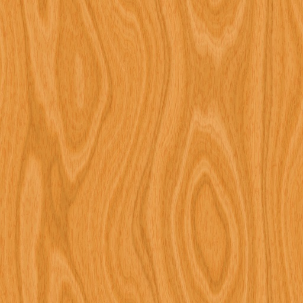

Plovárna
Semestrální práce do předmětu Y36MVR, zimní semestr 2009, cvičení pátek 9:15, tým 3
Technická specifikace - Stůl se slunečníkem
Autor: Jiří Mašek
Geometrie
Model počítá 1899 trojúhelníků.
Parametry prototypu
Model obsahuje 4 úrovně detailů.
- < 25 m
- Při vzdálenosti menší než 25 metrů se model zobrazuje se všemi detaily.
- 25 - 70 m
-
Textury jsou v modelu nahrazeny barvami.
Laťky tvořící sedák a opěradlo židle jsou nahrazeny kvádry.
Nohy židlí reprezentované uzly Extrusion jsou nahrazeny kvádry.
Tyčky, jenž tyto nohy spojovaly, jsou vynechány.
Látkový potah slunečníku tvořený uzlem Extrusion je nahrazen kuželem.
- 70 - 120 m
- Celý model je nahrazen uzlem Billboard.
- > 120 m
- Celý model je nahrazen prázdným uzlem Group {}.
Textury
| Jméno textury | Náhled | Velikost | Poznámka |
|---|---|---|---|
| Dřevo |  | 76.4 kB | Textura je použita pro opěrátko a sedák skládací židle. |
Zvuky
Seznam zvuků společně s velikostí souborů
- bez zvukových efektů